What you need
- A Stream Deck (any model, or Stream Deck Mobile) with the Stream Deck app 6.9 or newer, on Windows 10+ or macOS 12+.
- OBS Studio 28 or newer. Its WebSocket server is built in, so there's nothing extra to install.
- A Twitch account. You log in once from the key settings.
- Optional: Streamer.bot, if you also stream to Kick and want Kick viewers, events and chat on your keys.
Install Pilot and add keys
- Install Pilot from the Elgato Marketplace (inside the Stream Deck app, or on the web). If you were sent a
.streamDeckPluginfile, double-click it instead. - In the Stream Deck app, find the Pilot category in the actions list on the right.
- Drag the keys you want onto your deck. A good start: Live / uptime, Viewers, Follows, Latest event, Next ad and Stream health.
- Click any Pilot key to open its settings. The Setup checklist at the top is the same on every key, so you only connect things once.
Connect Twitch and OBS
1 · Twitch
- In any Pilot key's settings, press Connect Twitch. Twitch's activation page opens in your browser.
- Type in the code shown in the key settings, then approve Pilot on Twitch.
- The Twitch step turns green with your channel name. That's it: viewers, follows, subs, cheers, raids, ads and chat all come straight from Twitch.
Pilot logs in with Twitch's official device login. Your password never goes near Pilot, and the login stays on your PC. Disconnect in the settings logs it out.
2 · OBS
- In OBS: Tools → WebSocket Server Settings, tick Enable WebSocket server.
- Click Show Connect Info and copy the Server Password.
- Paste it into Password under step 2 in Pilot's settings. Leave the address as
127.0.0.1:4455unless you've changed the port in OBS. - The OBS step turns green. If it says Wrong password, copy it again from OBS.
OBS gives Pilot your stream status, uptime, bitrate, dropped frames and mic, and lets the Live key start and end the stream.
3 · Streamer.bot (optional)
Only needed for Kick. Leave it Off if you only stream to Twitch. See Kick with Streamer.bot.
Your keys
Thirteen keys, each its own action in the Pilot category. Counts for follows, subs, peak and chat start fresh each time OBS starts streaming. A restart within 5 minutes (a dropped stream) carries on as the same stream.
| Key | Shows | Press |
|---|---|---|
| Live / uptime | How long you've been live, with a red light when you're on air. | Hold 2 s to go live or end the stream (a ring fills). Tap to post your uptime in chat. |
| Viewers | Viewers right now. Pick Twitch + Kick together, Twitch only or Kick only in the key's settings. | Refreshes. |
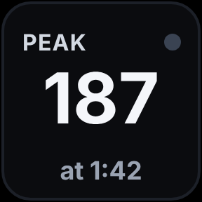 Peak viewers | The most viewers at once this stream, and when it happened. | Refreshes. |
| Follows | New followers this stream. Glows with the name when one lands. | Refreshes. |
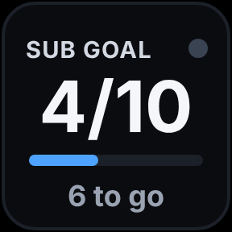 Subs | Subs this stream, or progress to a Sub goal if you set one in the key's settings. | Refreshes. |
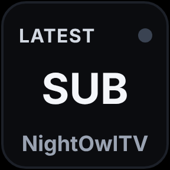 Latest event | The newest follow, sub, gift, cheer, raid (or Kicks, with Streamer.bot). | Tap to thank them in chat. |
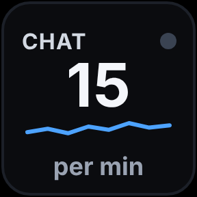 Chat speed | Messages per minute, with the last 8 minutes as a line. | Refreshes. |
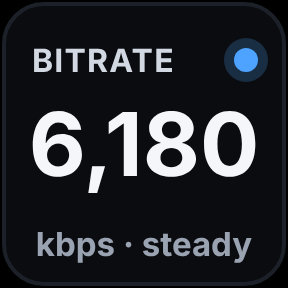 Bitrate | Your stream bitrate from OBS. Amber when it wobbles, red when it drops. | Refreshes. |
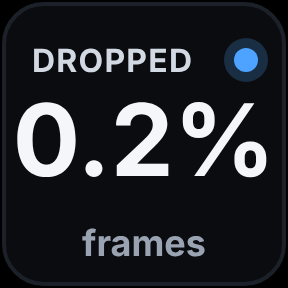 Dropped frames | Dropped frames from OBS. Amber at 1%, red at 5%. | Refreshes. |
| Next ad | Time to your next Twitch ad. Turns amber in the last 2 minutes. | Tap to snooze the ad (if Twitch has snoozes left). |
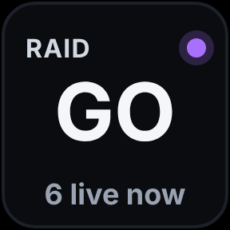 Raid | How many channels you follow are live. | Press to fill your deck with live channels. Tap one to open their channel, hold 1 s to raid it. Twitch's 90-second countdown shows on the key; press Raid again to cancel or close. |
| Stream health | One key that watches OBS, your mic, bitrate, frames and your platforms. | Press to see every check across your deck. Press again to close. |
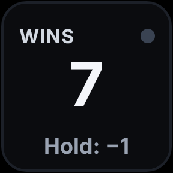 Counter | A count of anything: wins, deaths, hydration. Name it in the key's settings. | Tap +1, hold −1. Reset it yourself, or each stream. |
Going live with the Live key
Hold the Live key for 2 seconds to start streaming in OBS. Hold it again while live to end the stream. The hold stops you going live by accident.
Want your starting scene, intro or alerts to kick off too? In the Live key's settings, type the name of a Streamer.bot action into On go-live, run. Pilot runs it once OBS says the stream is properly live.
Don't put a “Start Streaming” step in that action. Pilot has already started the stream. Asking OBS to start again while it's still connecting can crash it, especially with the Multiple RTMP outputs plugin. Keep that plugin up to date too.
Kick with Streamer.bot (optional)
Kick doesn't offer a login Pilot can use on its own, so Pilot gets Kick through Streamer.bot. With it you get Kick viewers on the Viewers and Peak keys, Kick follows, subs and gifts on the event keys, Kick in Stream health, and Pilot's chat lines in Kick chat.
- In Streamer.bot: Servers/Clients → WebSocket Server. Tick Auto Start and press Start Server. Connect your Kick account in Streamer.bot if you haven't.
- In Pilot's settings, step 3: set Use it for to Kick (viewers, events, chat). Leave the address as
127.0.0.1:8080unless you've changed it. - Make the Pilot Kick action below, for Kick viewers and live status.
- Make the Pilot Kick Chat action below, for chat lines in Kick.
Pilot Kick
Create an action named Pilot Kick. Add a sub-action Core → C# → Execute C# Code, paste this in, and press Save and Compile. Then add three triggers to the action: Kick → Channel → Viewer Count Update, Kick → Stream Online and Kick → Stream Offline.
using System;
// Streamer.bot action "Pilot Kick" (Execute Code)
// Add these three triggers to this one action:
// Kick > Channel > Viewer Count Update
// Kick > Stream Online
// Kick > Stream Offline
// Sends Kick's viewer count and live status to Pilot (Viewers, Peak, Stream health).
public class CPHInline
{
public bool Execute()
{
if (args.ContainsKey("viewerCount"))
{
long n;
if (long.TryParse(args["viewerCount"].ToString(), out n))
CPH.WebsocketBroadcastJson("{\"pilot\":\"kick\",\"viewers\":" + n + "}");
return true;
}
string trigger = args.ContainsKey("triggerName") && args["triggerName"] != null ? args["triggerName"].ToString().ToLower() : "";
string status = trigger.Contains("offline") || trigger.Contains("end") ? "offline" : "online";
CPH.WebsocketBroadcastJson("{\"pilot\":\"kick\",\"status\":\"" + status + "\"}");
return true;
}
}Pilot Kick Chat
Create an action named exactly Pilot Kick Chat with the same kind of sub-action and this code. It needs no trigger: Pilot runs it.
using System;
// Streamer.bot action "Pilot Kick Chat" (Execute Code). No trigger needed: Pilot runs it.
// Posts Pilot's chat lines (uptime, thank-you, raid) in Kick chat. Twitch chat is sent by Pilot directly.
public class CPHInline
{
public bool Execute()
{
if (!args.ContainsKey("message") || args["message"] == null) return true;
string message = args["message"].ToString();
if (message.Length > 0) CPH.SendKickMessage(message);
return true;
}
}Twitch events that come through Streamer.bot are ignored while Twitch is connected directly, so nothing gets counted twice.
Chat lines and the look
Under Chat lines in any key's settings, write what Pilot posts. They go to Twitch, and to Kick too if you set up Pilot Kick Chat.
| Line | When | Fill-ins |
|---|---|---|
| Uptime | Tap the Live key | {time} how long you've been live |
| Thank-you | Tap the Latest event key | {user} who did it |
| Raid | When a raid starts from the Raid key | {name} and {login} of the channel you raid |
Send a test message checks chat works without waiting for a real moment.
Key glow sets the colour every Pilot key lights up in: Pilot blue, Signal green, Violet, Neon pink, Lime or White.
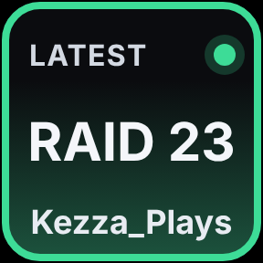
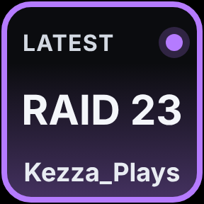
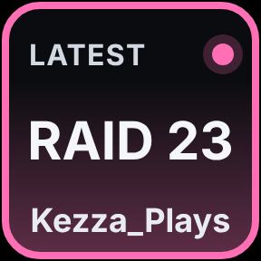
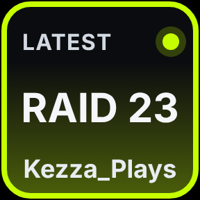
Stream health
The Stream health key keeps an eye on the things that quietly ruin a stream, and goes amber or red with the problem's name when one needs you:
- OBS connected and streaming
- Twitch live (and Kick, with Streamer.bot)
- Mic muted for 30 seconds, or silent for 2 minutes, while you're live
- Bitrate dropping, and dropped frames
For the mic check, type your mic's name exactly as it appears in OBS's Audio Mixer into Mic source in the key's settings. Press the key to see every check laid out across your deck.
Troubleshooting
| Problem | Fix |
|---|---|
| Keys show dashes | Something isn't connected yet. Open any key's settings and check the Setup steps are green. |
| Twitch shows “events off” | You're logged in, but Twitch's live events haven't connected. Pilot keeps retrying; press Reconnect if it stays like that. |
| OBS “Wrong password” | Copy the password again from OBS → Tools → WebSocket Server Settings → Show Connect Info. |
| Live key does nothing | It needs OBS connected, and a full 2-second hold. Watch for the ring. |
| OBS crashes when going live | Remove any Start Streaming step from your “On go-live, run” action, and update the Multiple RTMP outputs plugin. |
| No Kick viewers | Check Streamer.bot's WebSocket server is running, Pilot's step 3 is set to Kick, and the Pilot Kick action has all three triggers. |
| Chat lines don't post | Press Send a test message. For Kick, the action must be named exactly Pilot Kick Chat. |
| Next ad says NONE | Twitch hasn't scheduled an ad. Affiliates and Partners with ads turned on see a countdown. |
Still stuck? Pilot keeps a log at %APPDATA%\Pilot\pilot.log on Windows (~/Library/Application Support/Pilot/pilot.log on Mac). Send it with your question.